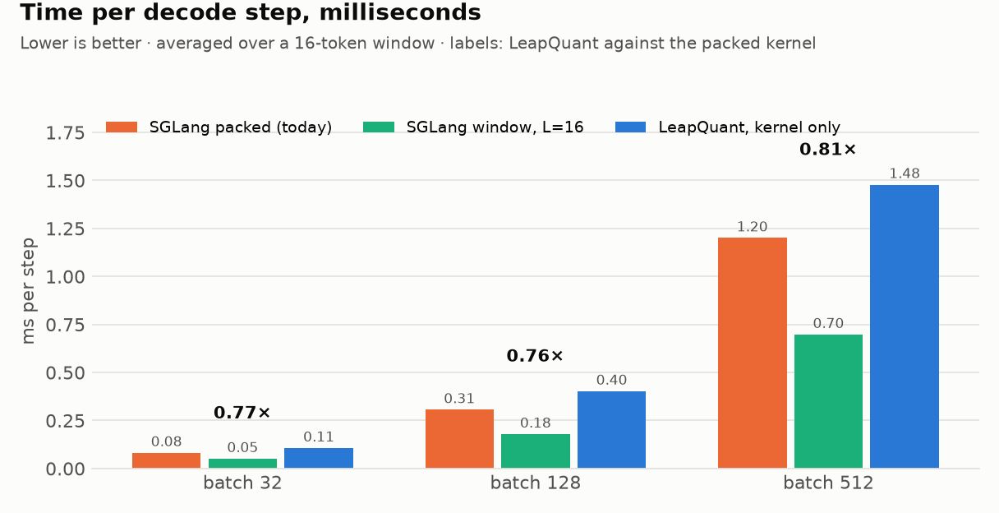
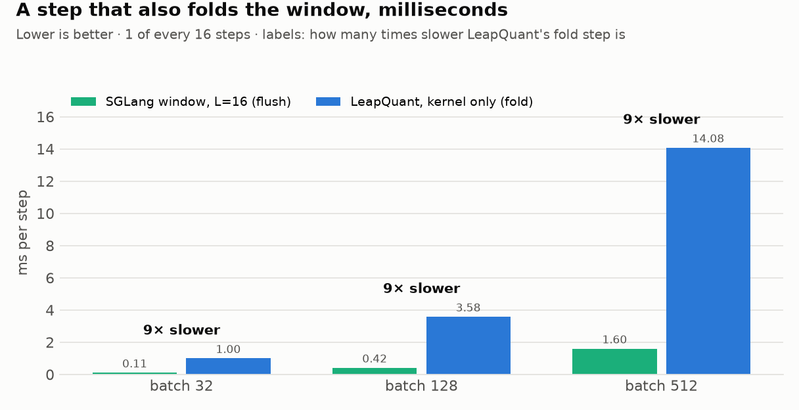
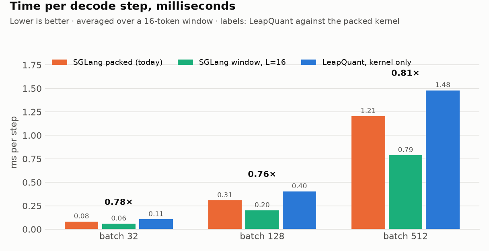
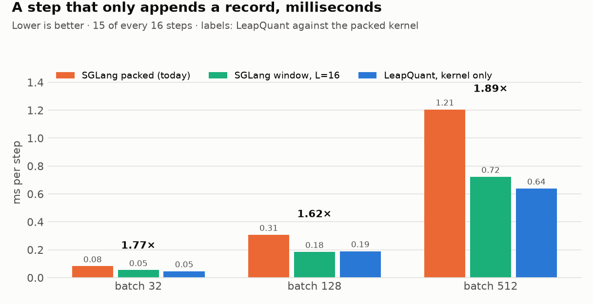
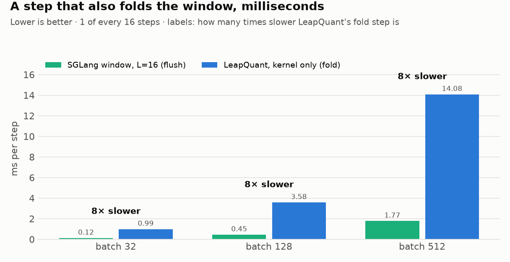

Kernel time per decode step
One decode token for every request of the batch, for one linear-attention layer, on one GPU. LeapQuant next to the two kernels SGLang ships.
Projections in bf16

| Batch | SGLang packed | SGLang window | LeapQuant, kernel only | LeapQuant, with gates | LeapQuant against packed | LeapQuant against window |
|---|---|---|---|---|---|---|
| 32 | 0.0816 | 0.0509 | 0.1063 | 0.3741 | 0.77× | 0.48× |
| 128 | 0.3058 | 0.1787 | 0.4023 | 0.5879 | 0.76× | 0.44× |
| 512 | 1.2002 | 0.6972 | 1.4777 | 1.8490 | 0.81× | 0.47× |

| Batch | Append: packed | Append: window | Append: LeapQuant | Fold step: window | Fold step: LeapQuant |
|---|---|---|---|---|---|
| 32 | 0.0816 | 0.0472 | 0.0466 | 0.1076 | 1.0016 |
| 128 | 0.3058 | 0.1629 | 0.1903 | 0.4153 | 3.5833 |
| 512 | 1.2002 | 0.6369 | 0.6375 | 1.6024 | 14.0802 |
Projections in fp32

| Batch | SGLang packed | SGLang window | LeapQuant, kernel only | LeapQuant, with gates | LeapQuant against packed | LeapQuant against window |
|---|---|---|---|---|---|---|
| 32 | 0.0820 | 0.0582 | 0.1052 | 0.3467 | 0.78× | 0.55× |
| 128 | 0.3071 | 0.2008 | 0.4018 | 0.5599 | 0.76× | 0.50× |
| 512 | 1.2052 | 0.7881 | 1.4789 | 1.8128 | 0.81× | 0.53× |


| Batch | Append: packed | Append: window | Append: LeapQuant | Fold step: window | Fold step: LeapQuant |
|---|---|---|---|---|---|
| 32 | 0.0820 | 0.0542 | 0.0462 | 0.1190 | 0.9896 |
| 128 | 0.3071 | 0.1843 | 0.1898 | 0.4495 | 3.5819 |
| 512 | 1.2052 | 0.7226 | 0.6388 | 1.7712 | 14.0803 |
What the charts show
- The append step is competitive. It reads the int8 state and appends one record, and it is as fast as SGLang's window kernel.
- The fold is what makes LeapQuant slow today. One step in sixteen rebuilds the state, finds four compensators and rounds. That step dominates the average.
- Overall LeapQuant is slower than the kernel it should replace. This is a statement about this version of the kernel, which was written for correctness first.
Setup
32 value heads, 16 key heads, state 128 × 128, window 16, one layer. Timed in one harness (kernel/bench_kernel.py): wall clock around 100 calls after 25 warm-up calls. "With gates" adds the gate and normalisation arithmetic that SGLang's kernels do internally.
What it does not show
End-to-end serving speed, and any other GPU. Source: e_kernel_speed_*.log.
Generated 2026-11-13 10:28 from results/run-quick-einstein by reports/generate_reports.py. All reports.